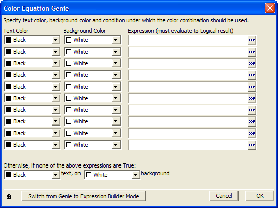
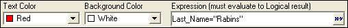

Color Equation Genie
The Color Equation Genie guides you through creating logical expressions for determining font color and background color for a field. Each row represents one expression. You can use multiple rows to set several different Color Equations for the same field, which are evaluated in the same order which they appear in the Genie.
 Note : The individual
expressions within the Color Equation Genie
must evaluate to logical values. However, the final output of the genie
is an expression that evaluates to a character value (e.g. "Black",
"Red" ).
Note : The individual
expressions within the Color Equation Genie
must evaluate to logical values. However, the final output of the genie
is an expression that evaluates to a character value (e.g. "Black",
"Red" ).

To use the Color Equation Genie :
Display the Setup tab of a field's Properties dialog.
Check the Color Equation check box.
Click
 to open the Color Equation Genie.
to open the Color Equation Genie.For each font format (each row):

A Color Equation that Changes the Text Color to Red if the Last Name Equals "Rabins"
Optionally, in the Text Color column click
 to
select a color from the drop-down list box.
to
select a color from the drop-down list box.Optionally, in the Background Color column click
to select a color from the drop-down list box.Enter an expression that evaluates to .T. (TRUE) or .F. (FALSE). This expression tells Alpha Anywhere when to turn the color format on and off. Optionally, click
 to display the
Expression Builder to help you build the necessary
expression.
to display the
Expression Builder to help you build the necessary
expression.
At the bottom of the Genie, you can set colors for Alpha Anywhere to use if none of the color equations evaluate to true.
Click the Switch from Genie to Expression Builder Mode button if you want to enter the font selection expression yourself, or you need to create more than 10 font equations. This alternative produces an expression that cannot be edited in the Font Equation Genie.
See Also